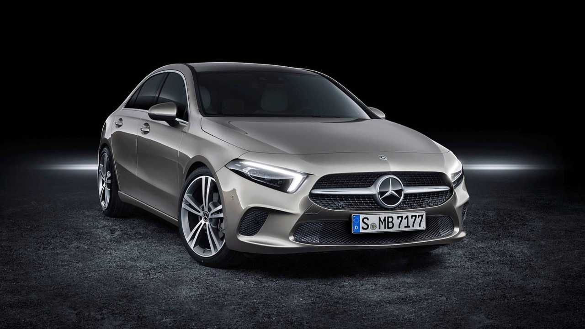
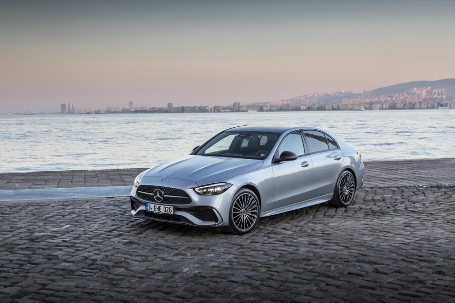

Araç içi elektrikle çalışan tüm özellikler güneş enerjisi ile çalışıyor, gündüz hem kullanım hem de şarj.
Benzlikte vakit harcamayacaksınız, kısa dolom çok uzun ömür.
İnanılmaz konforu ile evinizden daha rahat.
Güneş filtresi ile araç kullanırken güneş gözlüğü takmanıza gerek kalmıyor.


| Motor Gücü | 260 kW (354 BG) |
|---|---|
| Elektrikli menzil | 715 km |
| Toplam Tüketim | 13,8 kWh/100km |
| DC Şarj Süresi
%10 - %80 |
22 min |